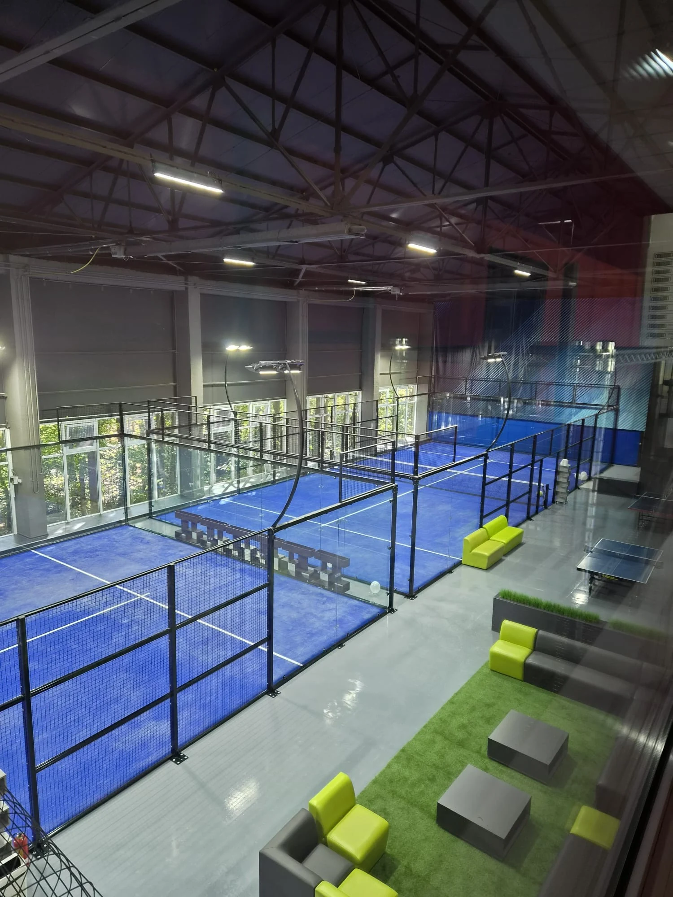

Why Court Count Is a Business Model Decision
Choosing the number of courts is not simply a site-layout exercise. It determines how many players can be served at once, whether coaching and normal bookings can coexist, whether leagues and social events are practical, how much rent or land is absorbed by playing space, and how much capital is committed before demand is proven.
Current padel-community discussions show both sides of the decision. A Birmingham project in 2026 is considering 2–4 covered outdoor courts as a neighborhood-club model. A new Greater Manchester club opened with five canopied courts and strong launch demand. Another recent club-planning discussion argues against squeezing the maximum number of courts into a site at the expense of social space.
The best court count must also work on weekday mornings, coaching hours, rainy periods, maintenance days and the months after the launch effect has faded.
2 vs 4 vs 6 vs 8+ Courts: Quick Comparison
| Format | Players on court at once | Typical strength | Main risk |
|---|---|---|---|
| 2 courts | 8 | Lower-risk launch, amenity, hotel, community or phased project | Low redundancy; coaching or maintenance quickly reduces availability |
| 4 courts | 16 | Balanced small commercial club with coaching and social programming | Can feel capacity-constrained if local demand grows rapidly |
| 6 courts | 24 | Regional club, leagues, coaching academy, events and stronger timetable depth | Higher capital and off-peak utilization risk |
| 8+ courts | 32+ | Destination club, tournament venue or large proven market | Large rent, staffing and demand requirement; site can become too court-dense |
These are operating formats, not profitability guarantees. Four players per court defines simultaneous playing capacity, but actual club economics depend on booking hours, court price, rent, staffing, ancillary revenue and demand.
When 2 Courts Can Be Enough
A two-court project can be rational when padel is part of a larger property rather than the only revenue engine. Hotels, resorts, schools, residential developments, tennis clubs and community facilities often value amenity and participation in addition to direct court rental.
- Lower initial capital and smaller site requirement.
- Useful for testing a new market before expansion.
- Can fit a mixed-use sports property more easily.
- Simple staffing model may be possible.
The constraint is redundancy. If one court is used for a private lesson, tournament match, repair or maintenance, half the playing inventory is no longer available. Two courts also make larger social rotations and leagues harder to schedule.
Why 4 Courts Are Often a Useful Commercial Planning Point
Four courts create operational separation. A club can reserve one court for coaching, run an open-play session on another and still keep two courts available for standard bookings. The venue can also host compact social events without shutting down every court for normal users.
This does not mean four courts are automatically the “best” size. A weak market can make four courts too many; a mature market can make them too few. But four courts are often useful for feasibility studies because the club begins to behave like a multi-program venue rather than a pair of standalone courts.
When 6 Courts Start to Change the Business
At six courts, the venue gains more scheduling depth. Coaching, junior programs, leagues, corporate events, normal bookings and social sessions can overlap more easily. The club can also lose one court to maintenance without materially changing the whole booking grid.
The trade-off is that six courts require more than six times the thinking of one court. Parking, toilets, changing facilities, reception, circulation, spectator areas, drainage, lighting, noise and staff workload all scale with the number of users on site.
A current Reddit installation discussion from Australia specifically asks about 4 versus 6 courts and highlights how site preparation, power, permits and civil scope change the installation budget. Community estimates vary widely, which reinforces the need for a project-specific local budget rather than a per-court multiplication.
8+ Courts Need Proven Demand, Not Optimism
Large clubs can create a stronger destination effect and a richer competition calendar, but they also create a much larger fixed-cost base. A large venue should normally be supported by evidence such as:
- Existing clubs with sustained high utilization.
- Waitlists or peak-hour booking pressure.
- Strong population and travel catchment.
- Corporate, school, coaching or league demand.
- A credible plan for off-peak usage.
- Enough parking and social infrastructure.
- Weather protection appropriate to the local climate.
Do Not Confuse Launch Demand With Stable Demand
New padel venues can open strongly because of novelty, pent-up demand and beginner interest. A 2025 Reddit discussion about Sweden points to the risk of supply expanding faster than normalized demand after an initial boom. That history is a reminder to stress-test a club after the launch effect, not only at opening.
Build at least three demand scenarios: conservative, base and high. The court count should still be financially survivable in the conservative case.
Peak Capacity: Start With Court-Hours
A simple planning model is:
- List the club's operating hours by day.
- Separate peak and off-peak periods.
- Estimate realistic occupancy for each period.
- Multiply available court-hours by expected occupancy—not by 100%.
- Reserve capacity for coaching, leagues and maintenance.
- Run the model across the full year, including weather and seasonality.
An eight-court owner AMA on Reddit reported roughly 8.3 booked hours per court per day over a long operating period at that specific venue. That is useful evidence that strong utilization is possible, but it is one club's operating experience and should not be used as a universal assumption.
Coaching Can Change the Required Court Count
A club with a strong academy model may need more daytime court capacity than a pure rental club. Private lessons use one court for relatively few players, while group clinics and social classes can fill off-peak periods efficiently.
Ask whether coaching is intended mainly as direct profit, player acquisition, retention or off-peak utilization. The answer affects how much inventory should be protected for coaches.
Social Play Needs More Than Courts
One of the strongest themes in current Reddit club discussions is that players value the social environment around the courts. A 2026 planning discussion explicitly recommends sacrificing some maximum court density for a better off-court experience.
That means the site plan should reserve enough area for:
- Reception and check-in.
- Toilets and changing rooms.
- Seating and social space.
- Circulation between courts.
- Storage and maintenance access.
- Food and beverage where relevant.
- Spectator space for events.
- Parking or drop-off strategy.
Use the Padel Court Dimensions & Site Planning Guide before fitting court rectangles onto the land.
Project Reference: Multi-Court Indoor Venue in Moldova
SPORTENVO’s commercial padel court project in Moldova documents a multi-court indoor venue integrated into an existing enclosed hall, with spectator circulation and a dedicated lounge area beside the courts. The reference illustrates why court quantity cannot be chosen from court rectangles alone: circulation, social space, clear height and the existing building all compete for the same usable floor area.
Use the Moldova reference to review spatial relationships and project coordination, then validate the actual court count against local demand, peak capacity, rent, staffing and expansion strategy.
Tournaments and Leagues: Why More Courts Help
Four courts allow a small event to run while still being manageable for a local club. Six or more courts make larger draws, corporate events and league blocks easier because more matches can run simultaneously. But event capacity should not be the only reason to overbuild a venue that is quiet on normal weekdays.
Weather Protection Can Change the Right Court Count
Four uncovered courts in a wet climate may deliver fewer annual playable hours than three well-covered courts. Conversely, an expensive roof over additional courts can destroy the economics if the local market cannot support the added capital.
Model the court count together with the weather strategy. Use Outdoor Padel Court Without a Roof: Is It Worth It? and the Padel Court Roof Cost 2026 guide.
2, 4 or 6 Courts: Decision Framework
| Question | 2 courts | 4 courts | 6 courts |
|---|---|---|---|
| Is local demand proven? | Can work with limited proof | Prefer clear evidence | Strong evidence recommended |
| Coaching program | Limited overlap with public bookings | Good flexibility | Strong academy potential |
| Social / league programming | Small groups | Good local club format | Larger recurring programs |
| Event capacity | Limited | Small events | Stronger regional event format |
| One court unavailable | 50% capacity loss | 25% | About 17% |
| Capital exposure | Lowest | Middle | Higher |
| Future expansion need | Likely if demand grows | Possible | Less urgent in many local markets |
Plan Expansion Before You Need It
If the site allows phased growth, reserve expansion space before building the first courts. Future courts need access, drainage, electrical capacity, circulation and potentially roof structure. Expansion becomes expensive when the only available land is behind completed parking, buildings or drainage infrastructure.
A phased 2 → 4 or 4 → 6 strategy can reduce demand risk while preserving a clear growth path.
How Court Count Changes the Investment Model
Do not multiply one-court cost by the number of courts and assume the answer is the club investment. Some costs scale per court, while others are shared.
| Mostly per-court | Partly shared / venue-level |
|---|---|
| Court structure and glass | Reception and social space |
| Turf and net | Parking and access |
| Lighting fixtures | Drainage outfall and utilities |
| Installation labor | Staffing and booking systems |
| Some foundation work | Permits, professional fees and marketing |
| Maintenance inventory | Roof structure may span multiple courts |
Use the Padel Court Cost 2026 guide for the full investment model.
What SPORTENVO Needs to Plan a Multi-Court Project
- Country and city.
- Indoor, outdoor or covered venue.
- Target court count and expansion target.
- Site dimensions or architectural plan.
- Existing slab or ground condition.
- Wind and climate conditions.
- Fixed, retractable or no roof.
- Desired social / spectator area.
- Installation responsibility.
- Target opening date.
Community Discussions That Informed This Guide
- Birmingham club planning: 2–4 covered outdoor courts
- Greater Manchester: newly opened five-court canopied club
- New club planning and the trade-off between more courts and social space
- Eight-court club owner AMA: occupancy and operating questions
- Australia: four vs six court installation discussion
Planning 2, 4, 6 or more courts?
Send the site dimensions, country, target market, court count, indoor/outdoor plan and whether future expansion is expected. We can structure the court, foundation and roof scope around the full venue.
Review My Club Layout →Padel Club Court Count FAQ
How many courts should a new padel club have?
There is no universal answer. Two courts reduce launch risk, four create more programming flexibility, and six or more support larger events and timetables. Local demand and site economics should decide.
Is a 2-court club enough?
It can be for a hotel, community facility, phased launch or smaller market, but it has limited redundancy and event capacity.
Why consider 4 courts?
Four courts allow coaching, social play and standard bookings to overlap while giving the venue more resilience when one court is unavailable.
When do 6 courts make sense?
Six courts can suit a proven regional market, academy or event-led club, provided demand exists beyond peak periods.
Should I maximize the number of courts on the land?
Not automatically. Social space, circulation, parking, toilets, maintenance access and spectator areas affect the customer experience and commercial model. Use the Padel Club Design Checklist to test the full layout, then compare customer-facing facilities in the Padel Club Amenities Guide.
After choosing 2, 4, 6 or more courts, test the operating model in the Padel Club Profitability & ROI Model.
Use the 15-point Padel Club Business Plan checklist to review demand, site, approvals, CAPEX, OPEX and expansion before committing.